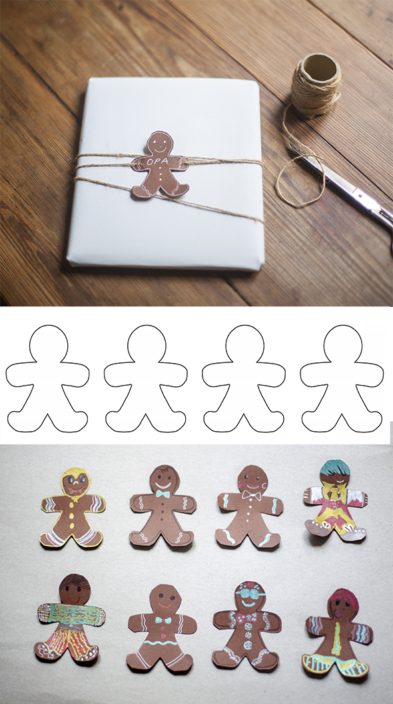

Present tag
Gingerbreadman as present tag.
Print out this .pdf and cut the forms out of brown paper.
Decorate your gingerbreadman as you like. This super gingercookie figures are painted by Elvira, Anton , Hannah and Noah.
Gingerbreadman como etiqueta de regalo.Etiqueta de regalo
Imprima este .pdf y corte las formas usando papel marrón.
Decora tu hombrecito de jengibre como quieras. Estos super galletas figuras son de Elvira, Anton, Hannah y Noah.
Pfefferkuchen Mann
Lebkuchen als Geschenketikett.
Drucke diese .pdf aus und schneide die Formen aus braunem Papier aus.
Verzieren die Lebkuchenmänner, wie du magst. Diese super PufferkuchenKekse sind von Elvira, Anton, Hannah und Noah.
